当中国体育健儿在巴黎奋勇拼搏，当网友为比赛过程心潮起伏的时候，有只“内鬼”却引起了全网的怒火。
有个叫@混合泳 微博账号，忙着为美国游泳队努力洗地，忙着对中国游泳队含沙射影。
细心的网友就翻了翻此人的微博，结果发现，它还不是一般的网络喷子，而是十几年如一日地发表丧心病狂的言论。
更令人吃惊和愤慨的是，他的身份居然是一名身处巴黎前方的中国体育官员（袁昊然，前游泳部部长、现自行车击剑运动管理中心副主任、中国反兴奋剂听证委员会单项协会代表）
在竞技场上，没有什么比吃里扒外更令人愤怒了。网友们纷纷要求对此人进行处理，内鬼必须清理。
今天下午，国家体育总局对此事做出了回应，对袁某某启动调查。
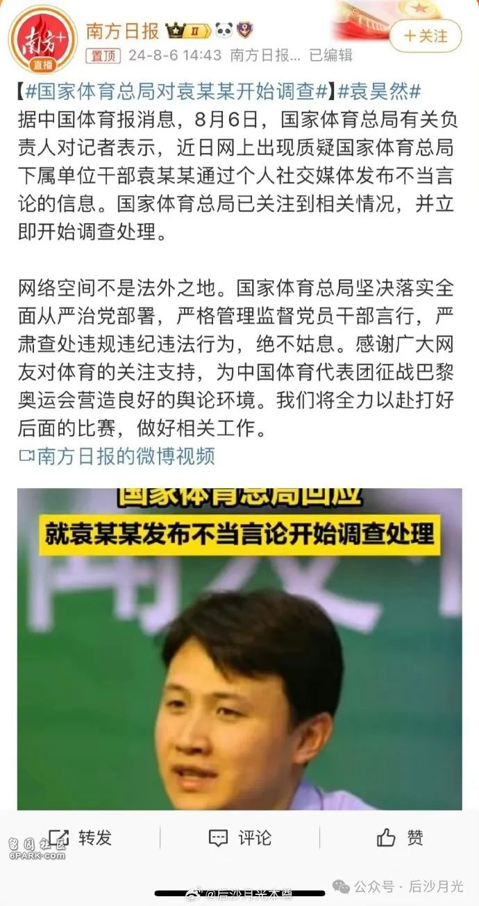
喜大普奔，人啊，还是不要太狂了！他吃着国家的，拿着国家的，转头却在抹黑国家，帮对手洗白，真是有够贱！
@混合泳 有够贱，有够坏，但也有够蠢。当被网友发现真身后，袁主任就慌了，开始了神操作，想把自己藏起来。
他先是关闭评论区，转发也设置了一键防护功能。
他发现这样也不安全，因为大家都在挂他。于是，他做了一个勇敢的决定–手动删除微博，想毁灭“罪证”。很多网友都跑去围观他删博全过程。
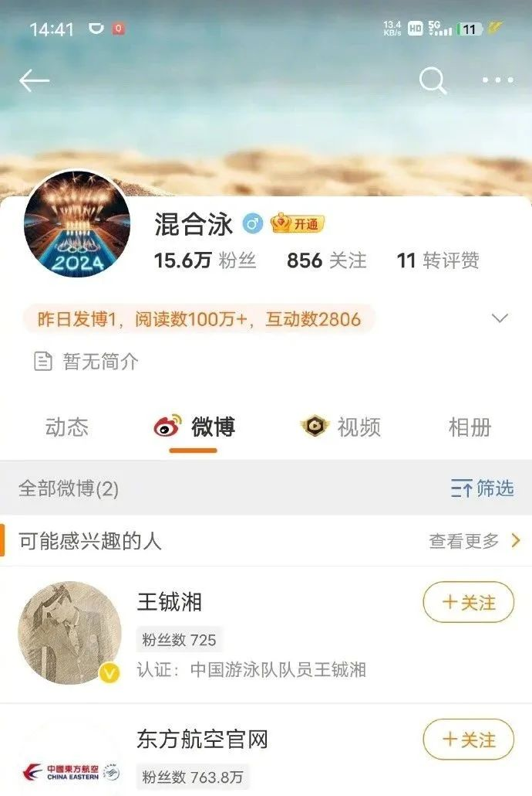
4000多条微博，他一夜未眠，终于在巴黎早上8点42分全部删光！！！估计他的手都抽筋了，删帖金牌，非他莫属。
接着，他又申请关闭账号（可能是到了白天，向人问到了有这么一招）
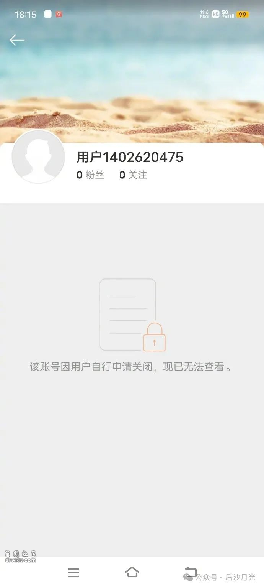
@混合泳 消失了。既然有如此简单的办法，又何必通宵熬夜连删4000多条微博呢？是不是有够蠢的。
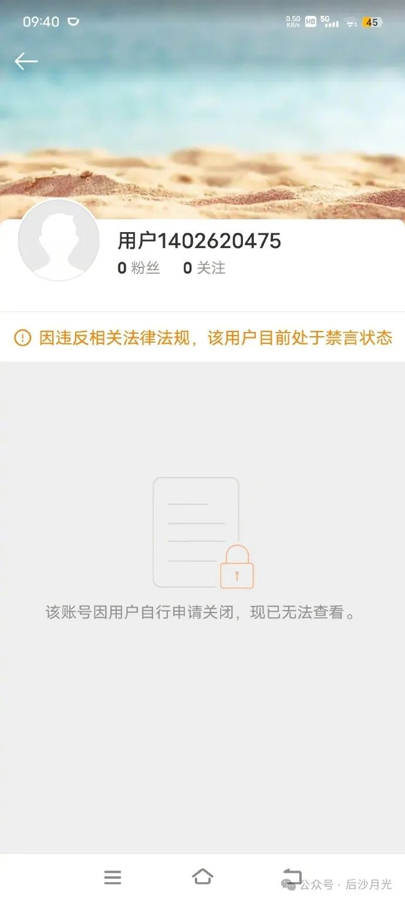
接着，微博方面给他补了一枪，用黄字加上禁言标记。
最后，炸号。
号没了，现在人也麻烦了。
风风光光去巴黎，失魂落魄回国内。
有的朋友可能不大了解这妖孽现形的过程，作为微博“战场”的参与者之一，我给大家简单报告一下：
在巴黎奥运会期间，美国动用各种力量，迫使国际药检机构针对中国游泳队进行不公正的药检，我们队员人均接受21次检测。
有人还说21次不多，那看看美国游泳队是多少？人均仅仅6次。
美国游泳队员可以吃好睡好，而我们队员的状态和心态却受到了干扰。
如此不公的行为，本身就违背了奥林匹克精神。

网友们发现，美国游泳运动员在赛后，普遍出现了“紫脸”现象，这引发了大家的禁药质疑。
此时，@混合泳跳出来了。
他比美国网友还急，急着为美国运动员洗地，归结于国内转播“偏色”。
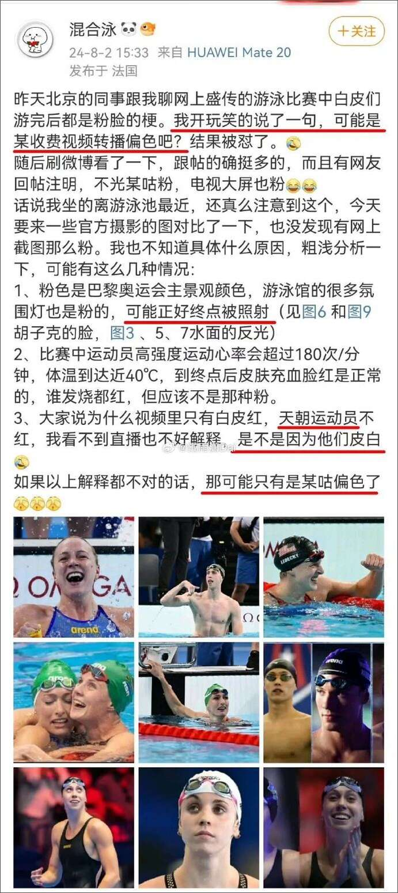
洗地的同时，@混合泳 还把中国运动员称为“天朝运动员”，中国两字，他都觉得烫嘴，说不出口。
其实，在美国电视直播画面当中，美国队员一样是“紫脸”，这不是什么“偏色”问题。
大家对@混合泳 起初并不是很在意，上去反驳几句就是了。
然而，他的定位引起了大家的好奇–巴黎，他还提到：“我坐得离游泳池最近”。
有意思，这位置可不是谁都能坐的，他是在吹牛吗？
网友们进入他的主页，开始顺藤摸瓜。
他不久前有一条微博是关于潘展乐的。
8月1日，潘展乐力克美国、澳大利亚两强夺得金牌，这是多么振奋人心的大喜事，网友都为他感到骄傲。
此人却对潘展乐阴阳怪气，语带嘲讽。
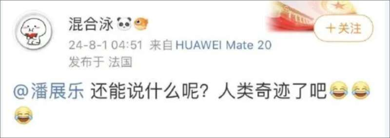
你看不出他有丝毫的喜悦之情，“人类奇迹”想表达什么？要看是谁说的。
既然@混合泳在帮美国洗地，那这句话就变味了，不是吗？
网友们接着翻他以前的微博。
结果发现其4000多条内容当中，丧心病狂的言论随处可见。
大家对这位天天泡在巴黎奥运赛场的@混合泳身份产生了极大兴趣，莫非是境外反华分子？邪教分子？
网友们没有什么技术手段，就是靠翻看他微博，从公开的信息中得出结论。
然而，他的身份却让人惊掉下巴。
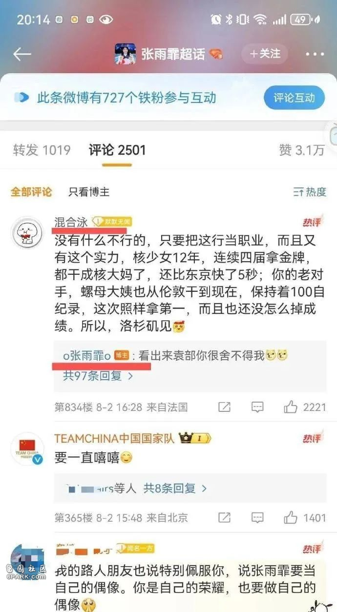
8月2日，@混合泳 与张雨霏在超话中互动，张雨霏回复时，称他为“袁部”。
感谢张雨霏，帮大家进一步确认了@混合泳 的身份。
另外，在2015年，泳者官微曾@过他，称他为“国际泳联中国特派代表袁主任”，还附上一张他和宁泽涛的合照，而他本人也在评论区回复。
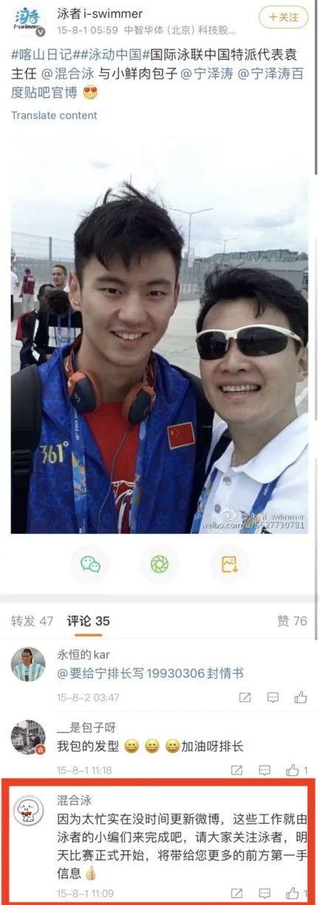
戴墨镜的这位就是袁主任。
再通过搜索引擎可以发现，与游泳项目有关的袁主任只有“国家游泳运动管理中心游泳部主任袁昊然”。
网友们在境外平台ins上也发现了这个人，账号拼音“袁昊然”。
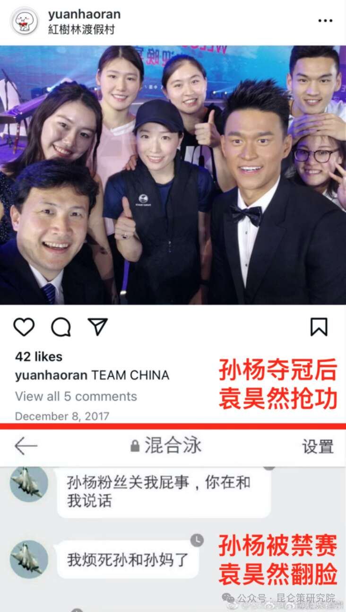
孙杨夺冠时，他在第一时间晒庆功合影，这种自拍照，如果不是当事人，第一时间是不可能得到的；
而当孙杨被“围攻”的时候，他立马翻脸：“我烦死孙和孙妈了”。
作为体育官员，不仅没有尽到保护运动员责任，甚至还落井下石。
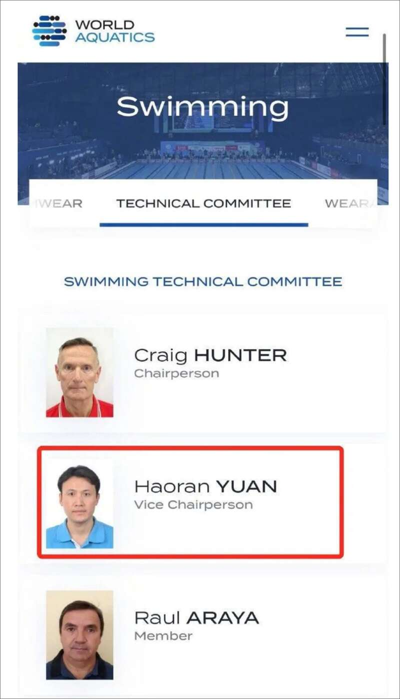
在国际泳联官网，他的职务是“游泳技术委员会副主席”（2022年当选）
将各种信息汇集起来，基本上可以确认@混合泳就是袁昊然本人。
最终的确认，还需要等官方调查结果。
我们决不冤枉一个好人，也决不放过一个坏人。
万一人家说自己的账号被盗了呢？以他的愚蠢程度，做出这样的辩解并不奇怪。
嗯，微博账号被盗十几年。
晒晒@混合泳在网上的言论。
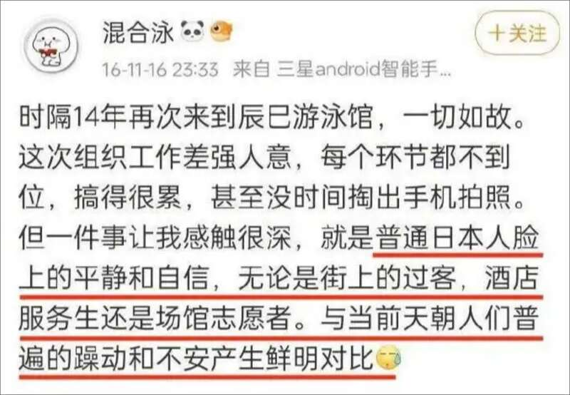
除了给美国洗地，还给日本涂脂抹粉，日本人组织工作做不好，让他受了累了。但他却能看出日本人“安静、自信”……
同时，一口一个“天朝”，对中国人各种不屑。
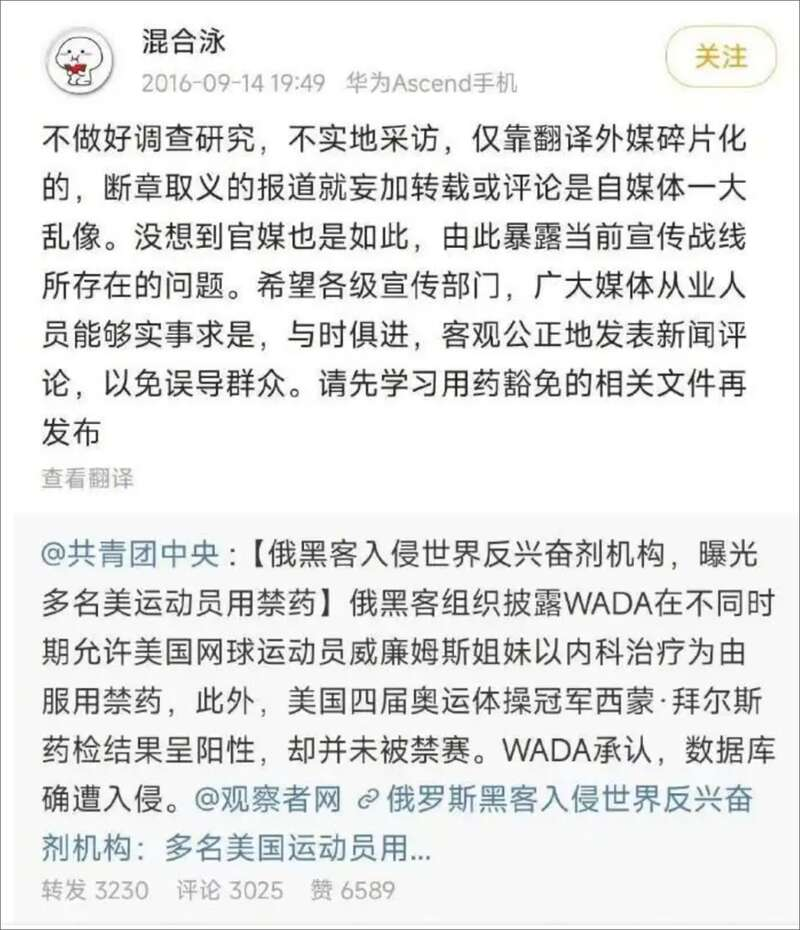
团中央官微指出WADA存在不公正药检的现象，他急了，跑过来教训团团先学习一下“用药豁免”文件。
是的，团团当然不懂，怎么美国队尽是一些哮喘病人在为国争光？
这种体育官员，你还指望他在中国选手遭到不公正药检时站出来维护我方权益吗？
除了体育，他还懂别的。
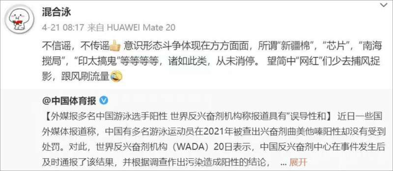
说“新疆棉、芯片、南海、印太问题”都是捕风捉影，难道美国炮制这些事件，跟中国是玩假的？
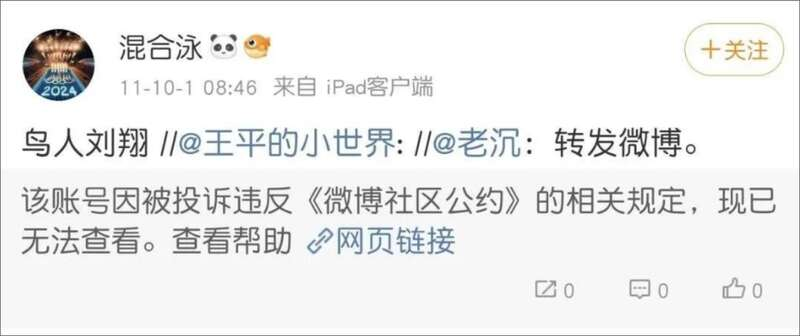
飞人刘翔也被他骂作是鸟人。
下面这篇，能让你怀疑他到底是不是人？
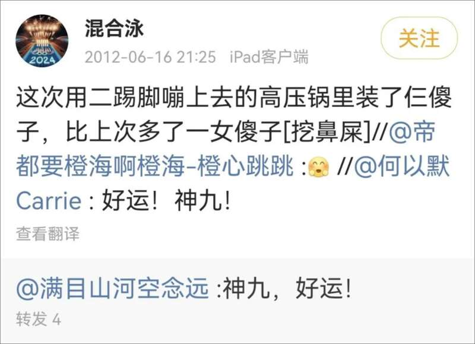
神九载人飞船上天，是中国航天事业的里程碑之一。
他却不高兴了，说是“二踢脚 ”、“高压锅”，三位航天员是“三傻子”，还特别提到“女傻子”。
他得有多恨这个国家，才会有如此恶毒的言论？这是人说的话？
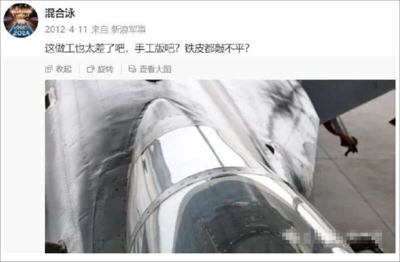
人民解放军，他也没有放过。说战机是手工版，连铁皮都敲不平。
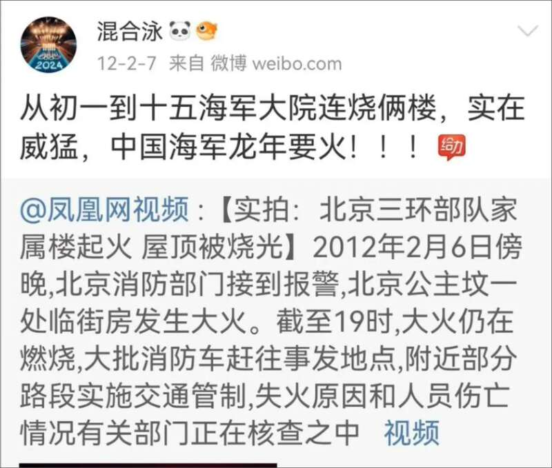
某部队家属楼起火，他在那幸灾乐祸，还弄了个“给力”红字。
或许有人说，十几年前网络环境确实有些乌烟瘴气，不少人被带歪。
但十几年后呢？@混合泳还是死性不改。
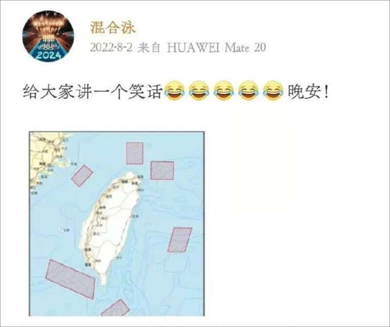
2022年，我军围岛军演，震慑岛内分裂势力。他却说是个“笑话”。
除了微博，他在ins上更是炸裂，侮辱国家，侮辱伟人，侮辱中华民族，具体言论恶毒到我甚至不方便贴出来。
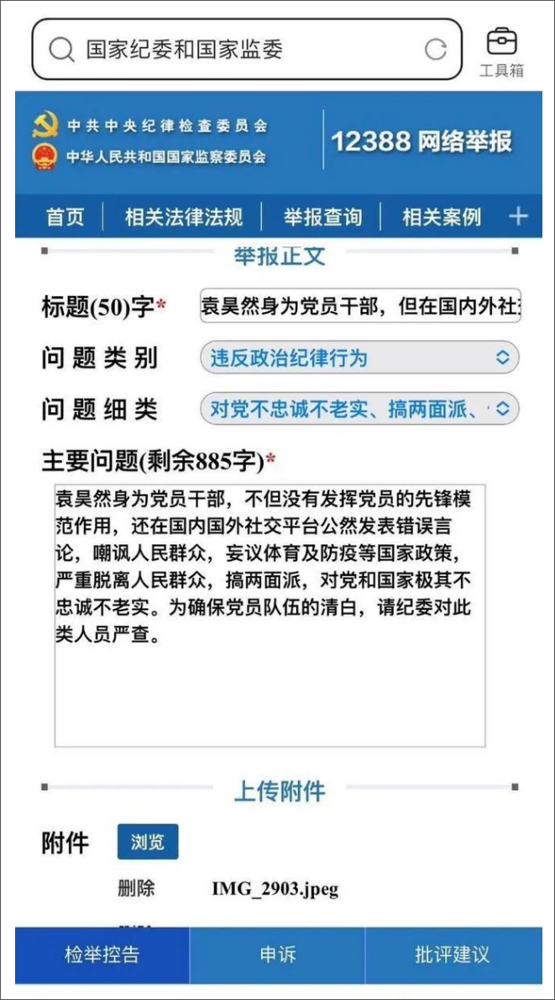
有网友要跟他较真，实名向纪监部门举报，他不要以为网络是法外之地。
实际上，网上的嘴脸才是他真实的嘴脸，网上的立场才是他真实的立场。
短短几天时间，一个典型的“两面人”就被网友曝光在网上，各种丑态一览无遗。
微博上有个词条，#为什么中国运动员总是被欺负#，答案就在袁主任这种人身上。
中国运动员被污蔑被造谣，他安静如鸡；
网友质疑美国运动员，他却义愤填膺了。
他是踩着中国运动员汗水升官的，心里想的却是怎么变着法地给污蔑中国运动员的对手洗地。吃着中国的饭，却要砸中国的锅。
对这种反华、反军队、反人民、反中国航天、反中华民族的“两面人”，没有任何原谅的余地，他绝不是什么失言，网友的眼睛是雪亮的。
他已经到了人神共愤的地步，在全国网友关注下，这位袁主任想混是混不过去的，他挨的板子要是轻了，大家都不答应。
举一反三，还要查查我们的体育干部队伍有没有张昊然、陈昊然、李昊然……
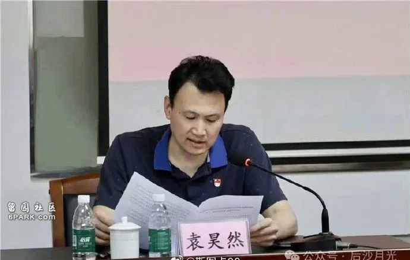
许多事实告诉我们：外敌并不可怕，内鬼才是致命的！